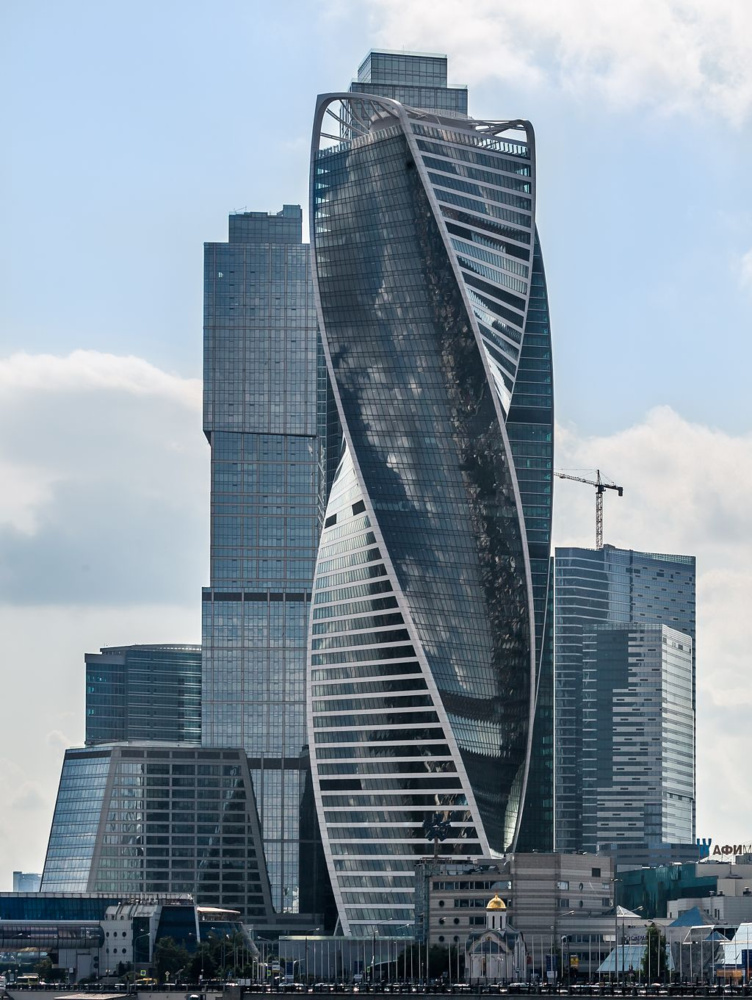

Башня Эволюции
Башня Эволюция (англ. Evolution Tower) — многофункциональный комплекс Московского международного делового центра, расположенный на Пресненской набережной, у пешеходного моста «Багратион». Включает в себя закрученную вокруг собственной оси 255-метровую 52-этажную башню, расположенную на трёхуровневом стилобате. На крыше стилобата расположена благоустроенная террасированная общегородская площадь, а пространство внутри отдано под торговую зону[1].
Общая площадь комплекса — 154 тысячи м². Общая площадь офисной части — свыше 94 тысяч м², из которых 79 тысяч м² — арендопригодная, ещё 14,7 тысяч м² приходится на торговую часть. Башня принадлежит государственной компании «Транснефть».
История
Изначально компания «Снегири» Александра Чигиринского и «Интеко» Елены Батуриной планировали на этой площадке построить крупнейший в столице Дворец бракосочетания. C кризисом 2008 года проект был заморожен. Затем в 2010 году «Интеко» продала свою долю Виктора Рашникова и его партнёру Надеру Надеру. От идеи Дворца бракосочетаний отказались в пользу офисной башни. В размороженном проекте от Дворца бракосочетания отказались, отдав предпочтение деловой составляющей[2].
Строительство небоскрёба началось в 2011 году[2]. В августе 2011 «Газпромбанк» открыл застройщику 7-летнюю кредитную линию объёмом 345 миллионов долларов для завершения строительства. В июне 2013 года ввели в эксплуатацию МФК «Эволюция», включающий трехуровневую торгово-развлекательную часть В конце IV квартала 2014 года башню сдали в эксплуатацию. Генеральным подрядчиком выступила турецкая компания Renaissance Construction. Точные затраты на строительство неизвестны, но «РБК» приводил оценки эксперта, называвшего диапазон в 446—520 млн долларов[2].
Архитектурное решение
Башню «Эволюция» проектировало шотландское бюро RMJM и его архитектор Тони Кеттл (англ.)русск., позднее создавший башню «Лахта-центра» в Санкт-Петербурге. С российской стороны над проектом работали ЗАО «Горпроект» и его главный архитектор Филипп Никандров. Вопреки частому сравнению c двойной спиралью ДНК, по словам Тони Кеттла, его вдохновляла скульптура Огюста Родена «Поцелуй», символизирующая идею брака[1].
Комплекс занимает территорию в 2,55 га, 2 га из которых — благоустроенная террасированная общегородская площадь. Трёхуровневый стилобат общей площадью 28 тысяч м2 отдан под торговую «Галерею Эволюция». Из неё организованы выходы в башню, на станцию метро Филёвская линия Выставочная и к пешеходному мосту Багратион. Кровля стилобата сделана эксплуатируемой: она приспособлена для фонтанов, террас кафе и озеленения. Перепад высот между крышей и набережной компенсируют эскалаторы, защищённые навесами. Под стилобатом расположена многоуровневая парковка на 1292 машиноместа[1].
Каждый из 51 этажа башни повернут относительно предыдущего на 3 градуса, таким образом здание «закручено» более чем на 150 градусов. При этом центральное ядро и восемь колонн с 15-метровыми пролётами между осей остаются строго вертикально всю высоту. Спиралеобразную геометрию повторяют только четыре угловых опоры здания. Для проекта была спроектирована самоподъёмная система опалубки, объединившая в себе функции ветрозащиты и рабочей платформы. Благодаря этому удалось добиться возведения этажа за 6 дней. Верх башни увенчан двумя асимметричными «арками» пролётом 41 м, визуально объединяющими два противоположных фасада. Они были произведены в Пьемонте и позже по частям доставлены в Россию[1].
В остеклении фасада применены однокамерные холодногнутые стеклопакеты с зеркальным стеклом SunGuard High Performance от Guardian Industries. Непрерывная лента гнутого остекления площадью 60 тысяч м² с постоянным наклоном в углах башни (примерно 14 градусов к вертикали) создаёт оптическую иллюзию, отражая панорамы Москвы перевернутыми под углом 90 градусов к горизонту[1].
В здании использовано новое решение ThyssenKrupp для лифтов: две кабины независимо циркулируют в одной лифтовой шахте, что позволило сократить количество шахт с 12 до 10[5].
Признание и награды
В 2016 году Совет по высотным зданиям и городской среде включил башню «Эволюция» в список 30 высочайших спиралевидных небоскрёбов мира[6].
Арендаторы и резиденты
На нулевом уровне торгового центра расположен семейный тематический парк профессий «Мастерславль». Минус первый этаж является пешеходной зоной с выходами к метро и мосту, там же расположены торговые галереи, бутики, рестораны, кафе, супермаркет и банкетные залы. На минус втором уровне размещается паркинг[4]. В башню постепенно переезжает центральный офис компании «Транснефть»[7].
Владельцы
Владельцем проекта Evolution Tower была компания «Сити Палас», которой на паритетных началах владели «Интеко» Елены Батуриной и «Снегири» Александра Чигиринского. После отставки своего супруга Юрия Лужкова с поста мэра Москвы Батурина в том же 2010 году продала всю долю в проекте за 52 млн долларов компании Snapbox Виктора Рашникова и его партнёра Надера Надера. Акционеры «Снегирей» были против продажи, в том числе из-за суммы сделки — рыночная стоимость всего проекта на тот момент, по оценке Cushman & Wakefield (англ.)русск., составляла 361 млн долларов (соответственно половина могла стоить до 180,5 млн). Однако в результате параллельных договорённостей по проектам Башни «Россия» и гостиницы «Россия» в Зарядье, в которых участвовал Рашников и Шалва Чигиринский, стороны договорились о новом партнёрстве[8][9]. . В июле 2014 года стало известно, что компания «Транснефть» готовится выкупить башню за сумму около 1 млрд долларов. Ожидалось, что сделка станет крупнейшней на офисном рынке Москвы. Официально сделка состоялась весной 2016: «Транснефть» покупала только офисные пространства и с учётом изменившегося курса могла заплатить около 300 млн долларов. В дальнейшем стало известно, что компания-продавец ООО «Сити Палас» получила 267,6 млн долларов чистой прибыли и должна была распределить их между конечными бенефициарами, однако но не сделала этого[9][8][2][7].
В 2016 году Арбитражный суд Москвы рассматривал иск компании Snapbox, которая не получила 133,8 млн долларов причитающихся дивидендов. Суд отказал истцу, указав, что дивиденды были выплачены компании Frental Developments[10]. В сентябре 2016 года уже компании братьев Чигиринских обратились в окружной суд кипрского Лимасола с исками к структурам Виктора Рашникова и Надера Надера, требуя 127 млн долларов — разницу между рыночной стоимостью проекта и ценой сделки[9]. В декабре 2016 окружной суд Никосии по иску Snapbox наложил обеспечительные меры на имущество компании Frental Developments и фирм, входящих в ГК «Снегири». Сумма требований с учётом недополученной прибыли и судебных издержек увеличилась до 170 млн долларов[10][11].